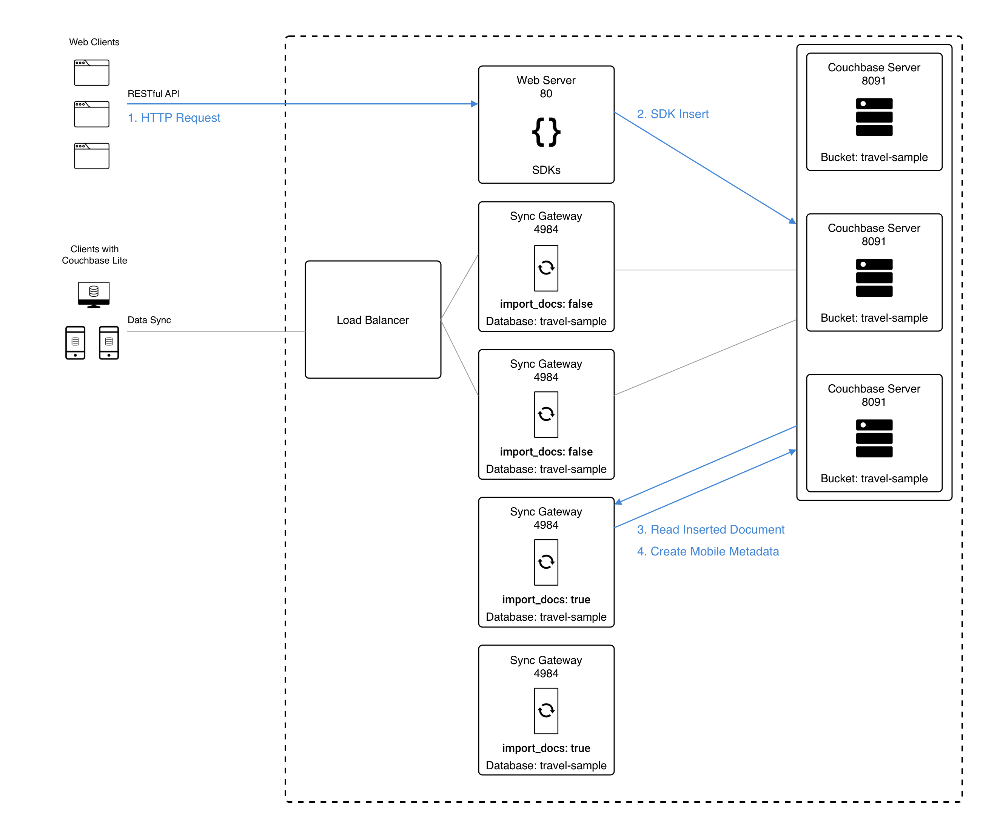

Sync with Couchbase Server
Use Sync Gateway to sync Couchbase Server changes securely from cloud to edge
This content explains how Sync Gateway synchronizes document changes made through Couchbase SDKs and N1QL queries.
Related Sync topics: Sync Using App | Inter Sync Gateway Sync - Overview | Delta Sync | Resync
|
Users of Couchbase Server 6.0 should ensure they have addressed the known issue (MB-41255) by upgrading to one of the recommended Couchbase Server versions (6.0.5, 6.5.2, or 6.6.1). The known issue can cause re-balance failures and/or failed replica writes of deleted or expired documents that use Xattrs. This impacts Sync Gateway deployments running with shared bucket access enabled, which use Xattrs for metadata storage. |
Introduction
Sync Gateway will automatically sync database changes if database.import_docs and database.enable_shared_bucket_access are set 'true'.
-
Enable_Shared_Bucket_Access
This setting ensures that both sync gateway and Couchbase Server can read and write to the same bucket simultaneously and that sync gateway can access Couchbase Server document XATTRS
See: Figure 1 and database.enable_shared_bucket_access. -
Import Docs
Setting this property true ensures that the sync gateway node performs import processing, obtaining the mobile metadata it requires to replicate changes — see: Import Processing.
You can configure both these properties using the Admin Rest API Database Configuration endpoint.
Shared Bucket Access
Mobile applications require additional metadata in order to manage security and replication.
sync gateway stores this information using Couchbase Server XATTRs (see Couchbase Server documentation on Extended Attributes).
Extended Attributes (XATTRs)
A document can be associated with zero or more extended attributes.
There are currently three types of XATTRS: User, System and Virtual.
Extended attributes:
-
Are JSON objects that can be associated with Couchbase documents.
-
Are stored and replicated along with the associated document in both intra-cluster and XDCR replication.
-
Can be accessed via Couchbase Server SDKs using the sub-document API, via command-line tools, and via views.
-
Are accessible from N1QL in Couchbase Server using the
().xattrs`property.
For example,SELECT meta().xattrs._sync from travel-sample where Meta().id = "user::demo";.
Both sync gateway and Couchbase Server use a System extended attribute, with the following characteristics to support mobile convergence (shared bucket access):
-
Shares lifetime with the document metadata - when a document is deleted, system xattrs are preserved with the tombstone.
-
Allocated 1MB of storage, independent of the 20MB available for the document
The sync metadata is maintained internally by sync gateway and its structure can change at any time.
It should not be used to drive business logic of applications.
The direct use of the N1QL query is unsupported and must not be used in production environments.
The _raw endpoint (/db/_raw/{docid}) on sync gateway’s Admin REST API returns both the document and its associated mobile metadata.
|
Documents
With bucket-sharing enabled, Couchbase Server documents can be inserted directly (using N1QL or SDKs) or by using sync gateway’s Public REST API.
sync gateway [1] creates the metadata it needs by abstracting it from the SDK or N1QL applications reading and writing data directly to Couchbase Server buckets. It uses Couchbase Server XATTRs [2] to store that metadata into an external document fragment — see Extended Attributes (XATTR).
Blobs and Attachments
Use sync gateway’s REST API’s /{db}/{docid}/{attachment} endpoints to manage attachments and blob data; you cannot use Couchbase Server SDKs to do this directly.
Standard practice would be to create the document using the SDK and then associate its blobs/attachments using the Add/Update Attachment (/{db}/{docid}/{attachment}) endpoint. You can see a practical example in this blog post — https://blog.couchbase.com/store-sync-binary-data-attachments-blobs-couchbase-mobile
Couchbase Lite apps seamlessly handle blobs and attachments, see the appropriate platform examples here:
Attachments can be accessed through sync gateway’s REST API using the /{tkn-db}/{doc}/{attachment} endpoint.
Tombstone Revisions
Note that, with bucket-sharing enabled, tombstone revision s are not retained indefinitely; they are purged based on the server’s metadata purge interval.
s are not retained indefinitely; they are purged based on the server’s metadata purge interval.
To ensure tombstones are synced with clients, you should set the server’s metadata purge interval based on your expected replication frequency — see the $dbname.enable_shared_bucket_access reference.
Accessing Sync Metadata
As stated, mobile metadata is not kept in the document, but in a system extended attribute (XATTR) in Couchbase Server.
The N1QL query language [2] supports the ability to query these extended attributes (XATTRS) and hence the document’s sync metadata — see: Example 1.
SELECT meta().xattrs._sync FROM `travel-sample` WHERE meta().id = "mydocId"| The sync metadata is maintained internally by sync gateway and its structure can change at any time. It should not be used to drive business logic of applications. The direct use of the N1QL query is unsupported and must not be used in production environments. |
Enable Shared Bucket Access
Shared bucket access is an opt-in feature. You can enable it without bringing down the entire sync gateway cluster — see Example 2.
{
"databases": {
"db": {
"name": "dbname",
"bucket": "my-bucket",
"import_docs": true (1)
}
}
}| 1 | The import_docs property is used to specify that a sync gateway node participates (exclusively) in Import Process. The mechanism by which sync gateway incorporates changes to data buckets it shares with Couchbase Server — see: Import Processing. |
Import Processing
The import process is a key part of mobile convergence. It is the means by which sync gateway becomes aware of non-sync gateway data changes and obtains the mobile metadata it requires to replicate changes.
Any non-sync gateway change is eligible for import. The document is first run through the Sync Function to compute read security and routing, with the following differences:
-
The import is processed with an admin user context in the Sync Function, similar to writes made through the sync gateway Admin API. This means that
requireAccess,requireUserandrequireRolecalls in the Sync Function are treated as no-ops. -
During import,
oldDocisnilwhen the Sync Function is executed.
You can specify a filter function using the import_filter property, which will only import specific documents.
| Use the logging.console.log_keys log key to troubleshoot import processing issues in the logs. |
Configuration
Note that import_docs only takes effect if the enabled_shared_bucket_access is set to true.
- ENTERPRISE EDITION
-
The
import_docsparameter defaults totrue, implying that, by default, all nodes in a cluster participate in import processing. To exclude a node, set"import_docs": false. - COMMUNITY EDITION
-
The
import_docsparameter defaults to false and must be explicitly set totrue.
The following table describes the key behavior differences between Community Edition and Enterprise Edition when import_docs is enabled, disabled or not set at all.
enabled_shared_bucket_access |
import_docs |
Behavior (EE) | Behavior (CE) |
|---|---|---|---|
true |
not set |
Assumes |
Assumes |
true |
false |
Node omitted from import processing (supported for workload isolation) |
Node omitted from import processing |
true |
true |
Node participates in import processing, and is assigned import partitions. |
Node performs import processing for all server mutations. |
false |
not set |
import docs is false by default |
import docs is false by default |
false |
true |
import docs property ignored, warning logged |
import docs property ignored, warning logged |
false |
false |
Import docs is false |
Import docs is false |
High Availability
In Enterprise Edition, import processing work is sharded across all sync gateway nodes with import enabled. This implies that if one of the nodes fail, the failed shard is automatically picked up by the remaining nodes in the cluster. This way, you get High Availability of import processing.
In Community Edition, there is no sharding of import across the nodes participating in the import processing. Each import node processes all server mutations.
Workload Isolation
As described in the table above, if import_docs is set to false, the node will not be participating in the import process.
This configuration is specifically recommended for workload isolation: to isolate import nodes from the client-facing nodes.
Workload isolation may be preferable in deployments with high write throughput.
The following diagram shows an example architecture of two sync gateway nodes handling the incoming client connections (import_docs: false) and two nodes sharing the import processing (import_docs: true).
